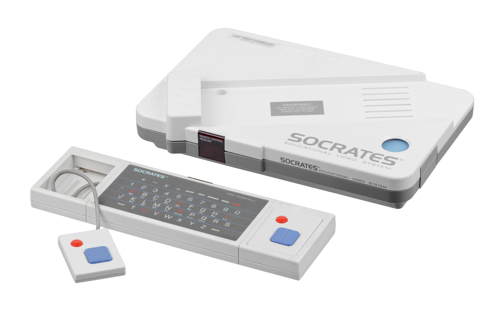
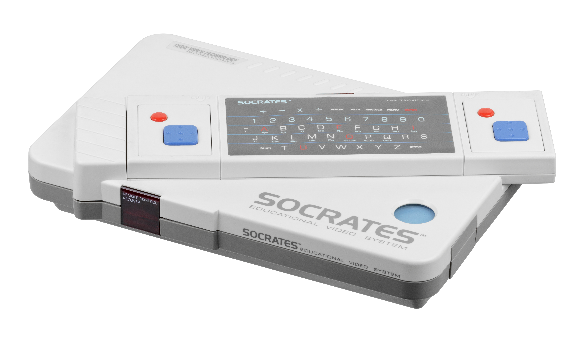
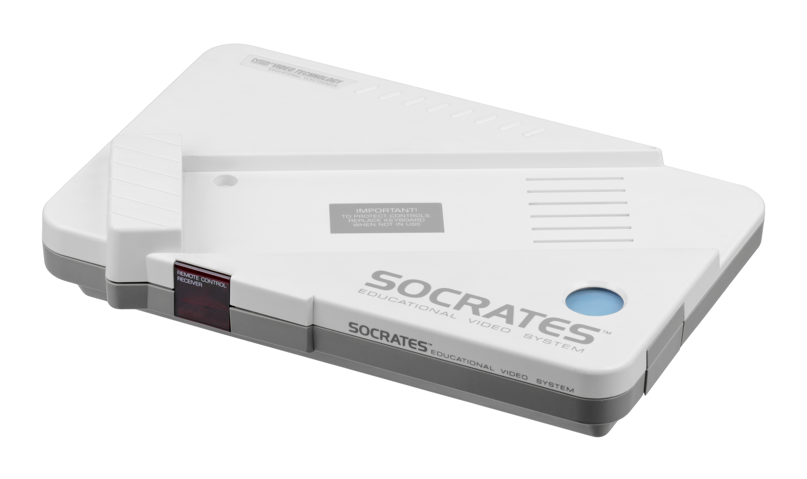
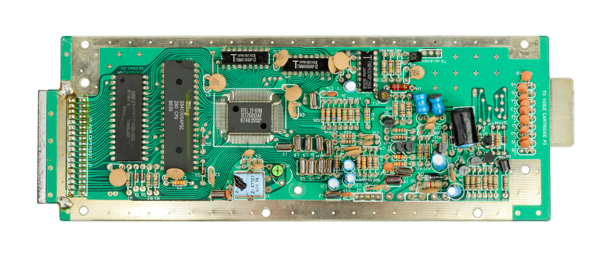

VTech Socrates
The kids' console that cut every wire — keyboard, controllers, mouse, and drawing pad all talked over infrared

Overview
The VTech Socrates is an 8-bit educational home video game console released by Hong Kong's VTech in 1988 and discontinued in 1996. Its defining trait is that every input device is wireless: the full QWERTY keyboard and two game controllers communicate with the console through infrared reception, and the optional Mouse tablet and Touch Pad — a stylus drawing surface — also talk to the main system over infrared. A Z80A at 3.57 MHz drives custom graphics, and games ship as cartridges shaped like 3.5-inch floppy disks.
The bundled software spans math problems, word problems, word games (hangman, anagrams, spelling races), music games, and Super Painter, a drawing program VTech later spun off into its Video Painter line of toys. The Touch Pad lets younger students practice writing letters and numbers and drawing shapes, and can also drive Super Painter; the CAD Professor cartridge runs on the Mouse tablet for architectural, textile, and fashion design. A separate voice cartridge adds speech to every game title.
Deep dive
VTech (Video Technology Ltd.) was the Hong Kong electronics maker behind the CreatiVision (1981) and the Laser home-computer line. The Socrates was its successor in the console space, a self-contained educational machine named after the Greek philosopher; the console's robot mascot resembles Johnny 5 from Short Circuit. In Europe it was distributed by Yeno as the Prof. Weiss-Alles (Germany) and Professeur Saitout (France), and in Canada as the Socrates Saitout.
In 1988, making a children's console's entire input stack wireless was exceptional. The keyboard beams keypresses over infrared to a receiver on the console, with real-world range varying from twelve feet to barely line-of-sight depending on the unit. The Mouse and Touch Pad peripherals use infrared too.
The Touch Pad gives the museum a rare consumer example of stylus-drawing input aimed at pre-readers: children practice writing letters, numbers, and shapes with a stylus on a pad while the drawing appears on screen. Super Painter provides brushes, colors, backgrounds, and clip art.
The system "draws" its static images line by line, filling the screen slowly enough that several seconds can pass before a picture appears, and there is latency between input and response — VTech's sluggish refresh gives the machine its patient, distinctive screen behavior.
The main unit runs off six D batteries or an optional AC adapter. The system is the successor to the VTech CreatiVision and the predecessor of the V.Smile.
Team & pioneers
- VTech (Video Technology Ltd.). Manufacturer and distributor (1988–1996); also distributed the system in Canada as the Socrates Saitout.
- Yeno. European distributor (Prof. Weiss-Alles in Germany, Professeur Saitout in France).
Media


